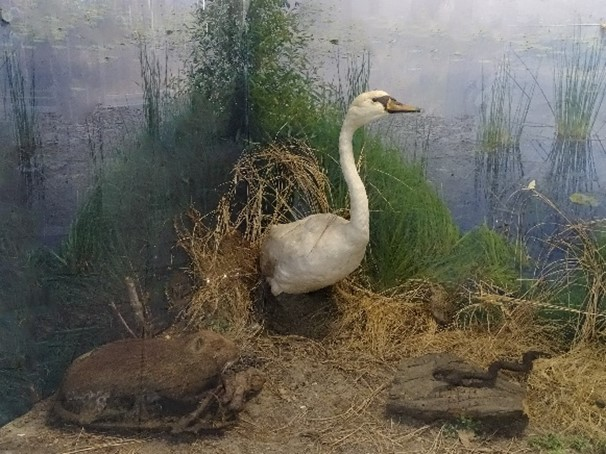
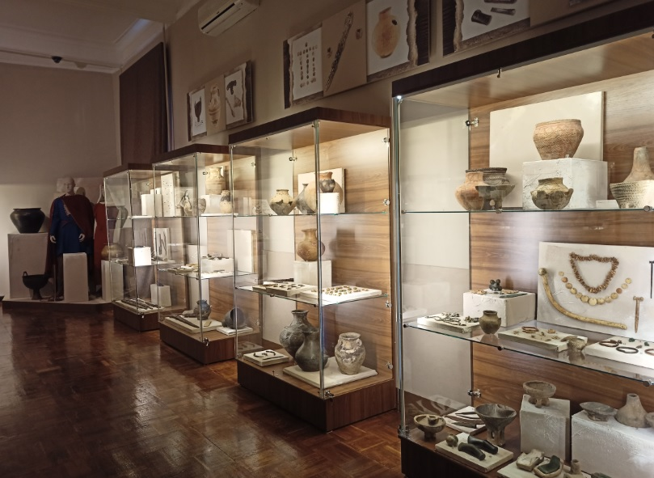
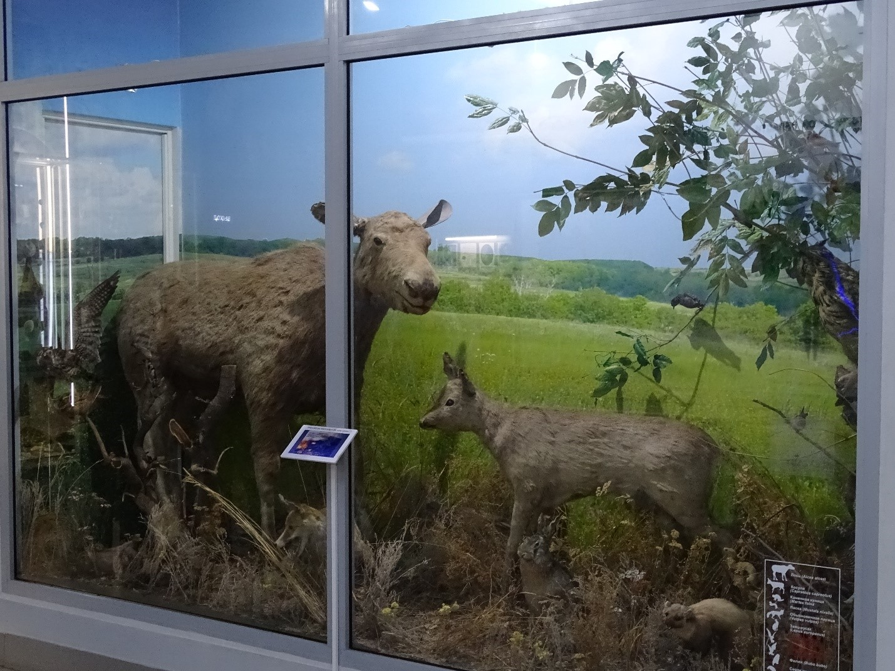
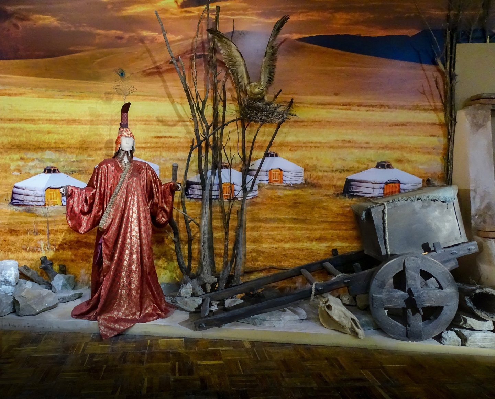
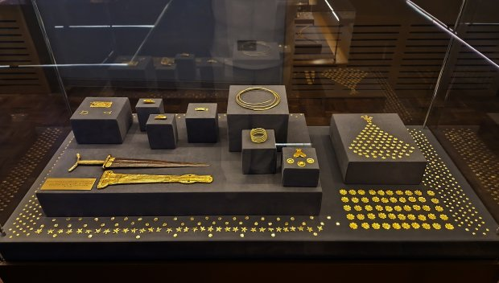
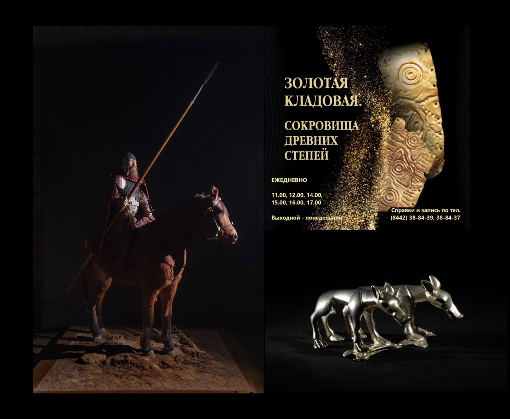

История музея
Волгоградский областной краеведческий музей был создан как Царицынский музей местного края в 1914 году. Инициаторами выступили купец и меценат А.А. Репников, преподаватели П.П. Курлин, К.Я. Виноградов и другие. Первым заведующим стал Пётр Павлович Курлин.
В годы гражданской войны музей был разорён, но уже в 1921 году восстановлен. В дни Сталинградской битвы коллекции почти полностью погибли, а уцелевшая часть была эвакуирована. После войны музей вернулся в Сталинград и сегодня занимает два исторических здания — бывшей Земской Управы и Волжско-Камского банка.
Мемориальная квартира М.К. Луконина
Мемориальная квартира поэта Михаила Кузьмича Луконина была открыта 25 октября 1978 года, через два года после его смерти. Инициатором создания музея выступила вдова поэта — Наталья Михайловна Луконина, передавшая квартиру государству с условием сохранения мемориальной обстановки.
Квартира расположена в доме №31 по улице Маршала Чуйкова — знаменитой «сталинке» на набережной Волги. Здесь полностью сохранён интерьер, созданный самим поэтом: личная библиотека (более 2000 томов), рабочий кабинет с печатной машинкой, коллекция грампластинок и сувениры из разных стран.
Сегодня музей-квартира является филиалом Волгоградского областного краеведческого музея и важным культурным центром города.
Коллекция музея
Музейное собрание насчитывает более 2500 экспонатов. Среди них:
- Личная библиотека поэта с автографами известных писателей;
- Рукописи, черновики и письма Михаила Луконина;
- Подарки от друзей: бурка и папаха от Расула Гамзатова, портрет кисти Ильи Глазунова, валенки от Маргариты Агашиной;
- Портрет Эрнеста Хемингуэя с дарственной надписью;
- Фотографии, документы, личные вещи поэта;
- Сувениры из разных уголков мира, привезённые Лукониным из творческих командировок.
Деятельность музея
Музей-квартира — это не просто место памяти, а живое культурное пространство. Здесь регулярно проводятся:
- Литературные вечера и поэтические чтения;
- Музыкальные гостиные и концерты;
- Встречи с писателями и деятелями культуры;
- Лекции и мастер-классы;
- Экскурсии для школьников и студентов.
Музей активно сотрудничает с благотворительным фондом «Маленькие люди». В 2023 году музей вошёл в Ассоциацию литературных музеев Союза музеев России.
Практическая информация
📍 Адрес: г. Волгоград, ул. Чуйкова, 31, кв. 47
📞 Телефон: (8442) 38-84-42
🕰 Режим работы: вторник – воскресенье с 10:00 до 18:00, понедельник – выходной
🎭 Экскурсии: по предварительной записи через форму на странице «Экскурсии»
vokm@volganet.ru; www.vokm134.ru
*Администрация оставляет за собой право изменить время и тему мероприятия.